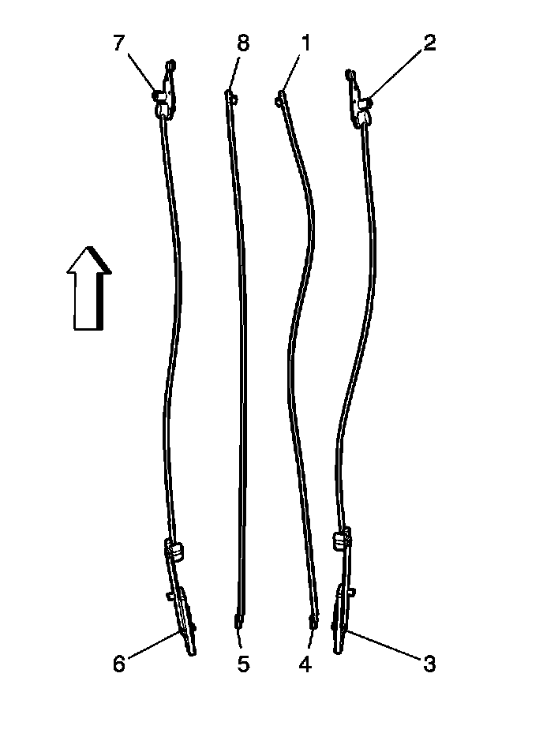

Sunroof Window Cable Assembly Replacement (Rear)
Sunroof Window Cable Assembly Replacement (Rear)
Removal Procedure

1. Remove the rear vent window. Refer to Sunroof Window Replacement (Front) (Service and Repair)Sunroof Window Replacement (Rear Vent) (Service and Repair)Sunroof Window Replacement (Center) (Service and Repair)Sunroof Window Replacement (Rear Stationary) (Service and Repair) .
2. Remove the center window panel (2). Refer to Sunroof Window Replacement (Front) (Service and Repair)Sunroof Window Replacement (Rear Vent) (Service and Repair)Sunroof Window Replacement (Center) (Service and Repair)Sunroof Window Replacement (Rear Stationary) (Service and Repair) .
3. Remove the rear sunshade assembly. Refer to Sunroof Rear Track Assembly Replacement (Sunroof Rear Track Assembly Replacement) .
4. Remove the screws securing either the right or left rear track to the sunroof frame.

5. Disengage the drive tube retainer (3) from the track (5).
6. Lower the track into the passenger compartment.

7. Carefully pull the rear vent window cam assembly (3, 6) from the track.

8. Remove the rear vent window cable assembly (1) from the track.
Installation Procedure

1. Position the bullet end of the rear vent window cable assembly (5) into the rear window track (2).
2. Carefully push the cable assembly into the track until the bullet end of the cable reaches past the track.
3. Slide the cable into the drive tube.
4. Push the cable until the cam assembly aligns with the opposite side cam positioned in the track.
5. Install the drive tube retainer (3) to the rear track (5).
6. Align and position the cable assembly (1) cam pin to the cam block (2), located on the lower sunroof frame.
7. Position the track to the lower sunroof frame.
8. Loosely install the rear track assembly screws
9. Measure the tracks side-to-side to ensure that both tracks are parallel.
Notice: Refer to Fastener Notice (Fastener Notice) .
10. Secure the track to drive tube retainers.
Tighten the screws to 5 N.m (44 lb in).
11. Install the rear sunshade assembly. Refer to Sunroof Rear Track Assembly Replacement (Sunroof Rear Track Assembly Replacement) .
12. Install the rear sunroof vent window. Refer to Sunroof Window Replacement (Front) (Service and Repair)Sunroof Window Replacement (Rear Vent) (Service and Repair)Sunroof Window Replacement (Center) (Service and Repair)Sunroof Window Replacement (Rear Stationary) (Service and Repair) .
13. Install the center window panel (2). Refer to Sunroof Window Replacement (Front) (Service and Repair)Sunroof Window Replacement (Rear Vent) (Service and Repair)Sunroof Window Replacement (Center) (Service and Repair)Sunroof Window Replacement (Rear Stationary) (Service and Repair) .
14. Perform the sunroof rear vent window/sunshade initialization procedure. Refer to Sunroof Rear Window Initialization Process (Sunroof Rear Window Initialization Process) .